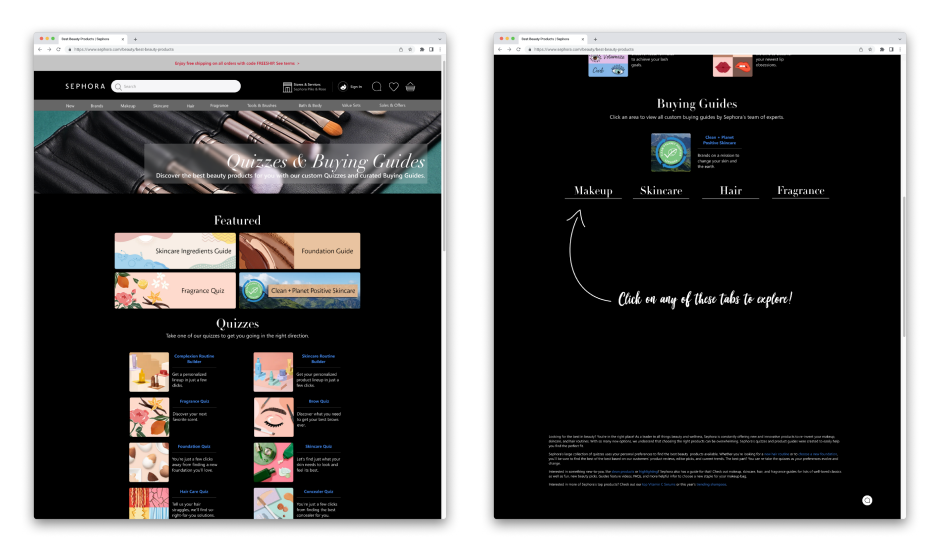
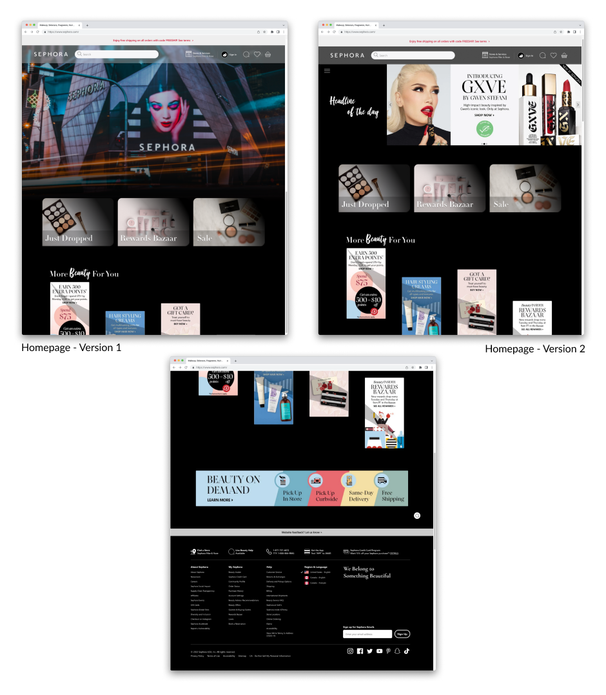
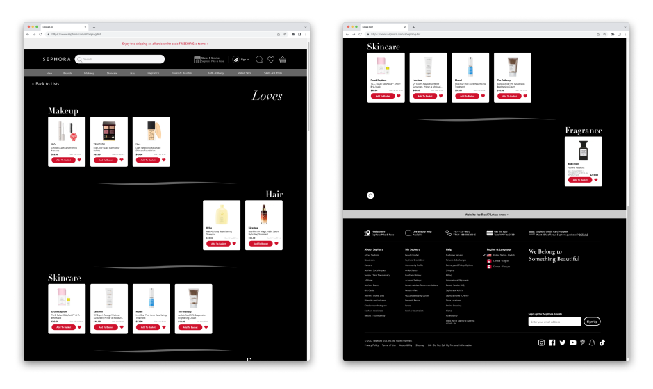
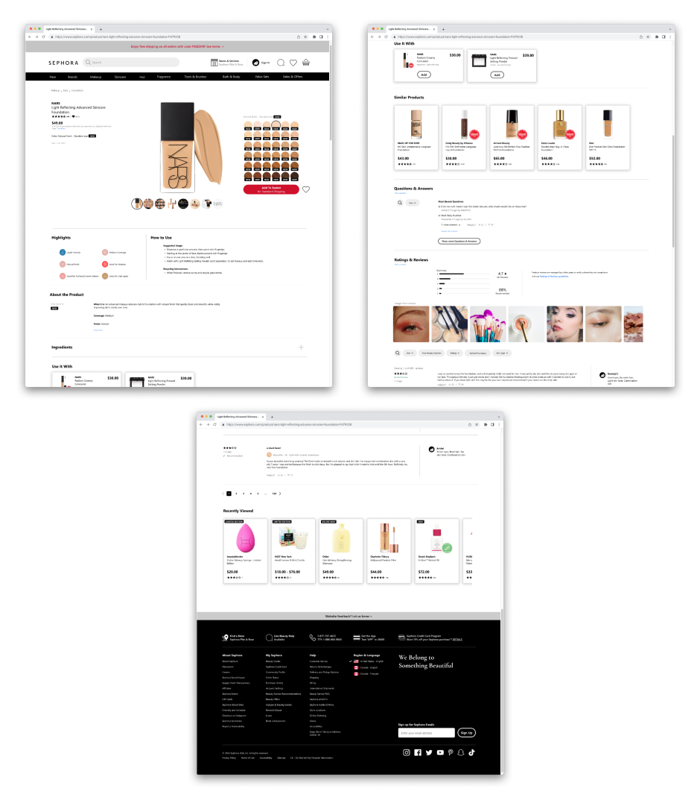
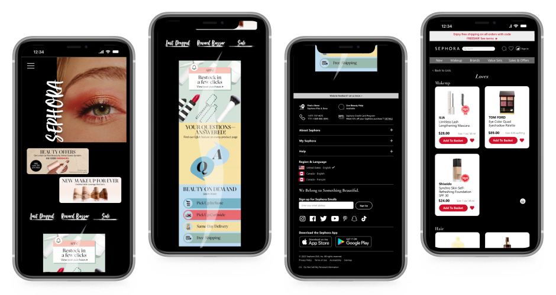
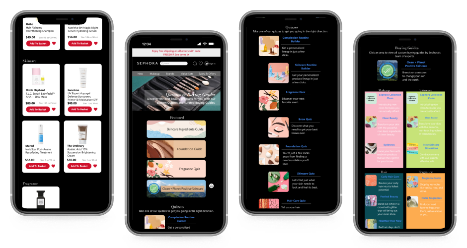
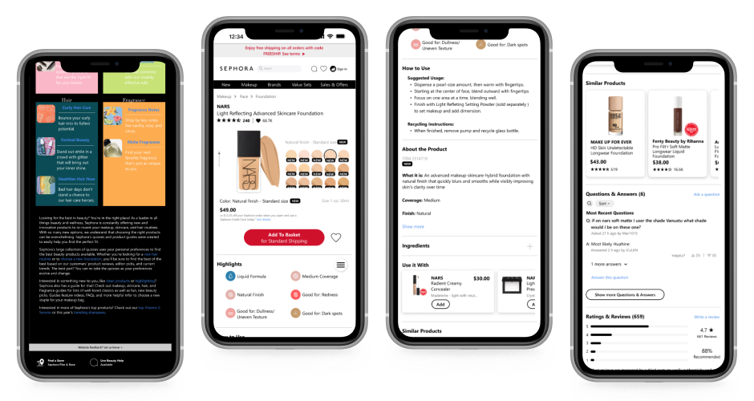
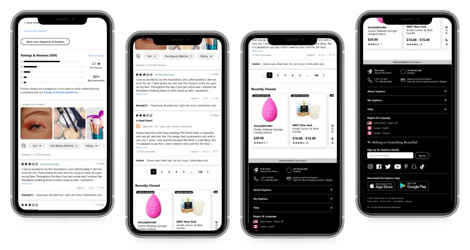

Interface Redesign
Redesigning Sephora
What happens when you take a product-forward ecommerce site and strip it back to let the brand breathe?
Overview
I picked four pages from the Sephora website — desktop and mobile views, not the app — and redesigned them for a cleaner visual and user experience. This was my first complete Figma project, and my first time building a design system on top of an existing brand language rather than from scratch.
The specific user flow I designed for: Homepage → Quizzes & Buying Guides (via hamburger menu) → My Loves → a specific product page (NARS Light Reflecting Foundation). A narrow flow, but a deliberate one — enough to stress-test the design decisions across different page types.
Prototype
Design approach
My main design decision was to lean into a clean, impression-driven homepage — a significant departure from the current Sephora site which is dense with product discovery. The bet was that giving the brand more visual space would create a stronger first impression and let the editorial content lead, rather than overwhelming users with products on arrival.
Working within an existing brand language is a different muscle than designing from scratch — you're making decisions about what to keep, what to push, and what to quietly fix.
From the technical side, this project was where I learned auto layout, component variants, and prototype animations in Figma. Building a design system on top of someone else's brand forced me to think more carefully about tokens, consistency, and what actually constitutes a "system" vs. a loose collection of styles.
Gallery
Four pages, both desktop and mobile views.








Scroll to see all screens — desktop views followed by mobile
Reflection
This project had no user research — it was designed entirely from my own experience with the Sephora site, which is both its honest limitation and part of what made it a useful learning exercise. The cleaner homepage felt right to me, but that's not the same as knowing it works. A real next step would be a comparative usability study to test whether the tradeoff actually holds up.
The question I still wonder about: does a more editorial homepage create a better first impression, or does it just frustrate users who came to shop?